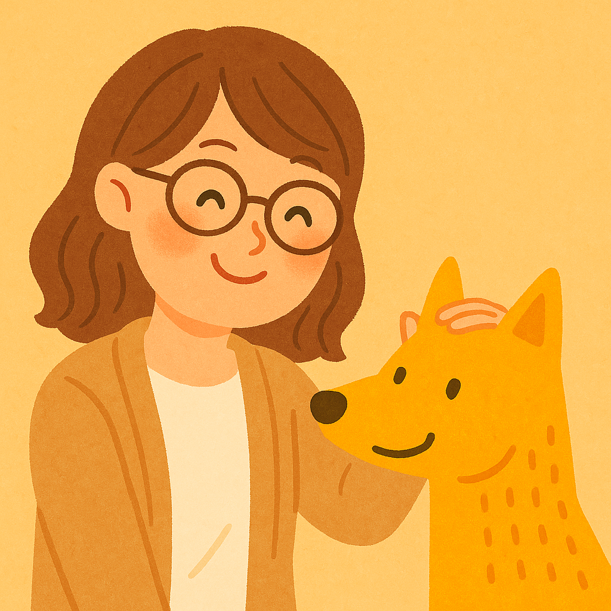

傾聽牠的心聲，理解毛孩的世界
想知道毛孩為什麼突然不吃飯？為什麼牠害怕某種聲音？
也許你曾經試過動物溝通，卻沒有看到效果，覺得只是“花錢繳學費”。
那麼，這次的課程你絕對不能錯過！
我們邀請了資深的狗兒行為諮詢師 - PAPA (楊森僅) 老師。
帶您瞭解如何讓你與毛孩的關係更加和諧。

講師介紹
PAYA 佩芽（寵物溝通師）
- 10+ 年實務經驗，擅長犬貓情緒溝通
- 合作：多家動物醫院／收容所志工訓練
- 著作：〈理解牠的語言〉專欄作者
課程包含：基礎概念、日常觀察、建立安全感、常見行為問題拆解。
活動流程
- 13:00–13:20 報到入場
- 13:20–14:10 課程一：理解毛孩的「情緒與訊號」
- 14:15–15:00 課程二：日常互動建立安全感（含示範）
- 15:05–15:45 Q&A 與案例討論
- 15:45–16:00 合照與散場
常見問題
A: 本活動全程免費參加，現場提供的健檢、疫苗與講座皆為公益服務，歡迎攜帶毛孩一起共襄盛舉。
A：可以喔！不過建議您先向現場獸醫師說明毛孩的過敏狀況，我們也會盡量避開可能引發過敏的產品或物品。
A：免費血液檢查僅限 10 名，採 現場報名、先到先登記，請提早到場登記以確保名額。
參加前請確認疫苗、健康狀況良好；現場請全程牽繩並尊重他人與毛孩距離。